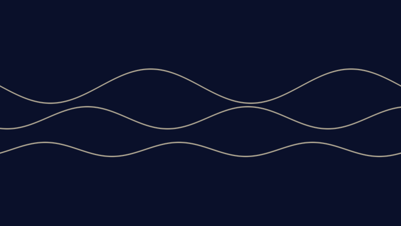
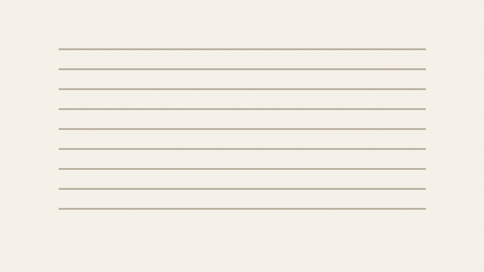

Side Quests
A collection of creative expeditions in filmmaking, sound, and story.
FILM
DEEPS Shorts
A series of short films portraying Brown University earth and planetary scientists and their science.

MUSICOriginal Compositions
I compose music of different genres from bluegrass to latin western and rock.

WRITINGThe People and the Xiozomes
A Lovecraft-esque short story about oceanographers encountering a mysterious type of deep sea creature.
Side Quests
Une collection d'expéditions créatives : cinéma, son et récit.
FILM
DEEPS Shorts
Une série de courts métrages sur des scientifiques de la Terre et des planètes à l'Université Brown, et leur recherche.
MUSIQUE
Compositions originales
Je compose dans plusieurs genres, du bluegrass au western latin et au rock.
ÉCRITURE
The People and the Xiozomes
Une nouvelle d'inspiration lovecraftienne : des océanographes rencontrent une créature mystérieuse des profondeurs.